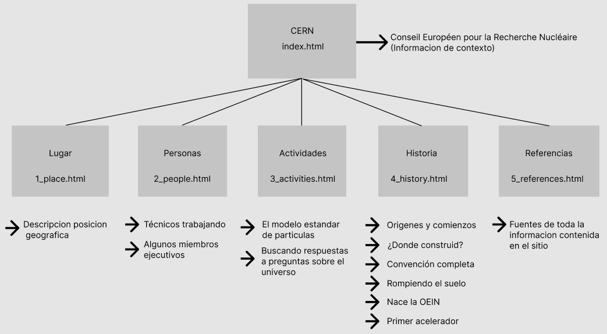

Lugar
Personas
Actividades
Historia
Referencias
© Jonnatan Pereira 2022
Mapa de navegación

Referencias
Casi toda la información de texto e imágenes presentada en este sitio fue sacada directamente de la
página oficial del CERN
y posteriormente traducida
Algunas otras referencias son:
CERN-logo:
https://scoap3.org/cern-logo/
Boton azul del menú:
https://cutewallpaper.org/24/blue-rectangle-png/view-page-24.html
Imagen de la sección -Lugar-:
https://houseofswitzerland.org/es/taxonomy/term/4/cern-en-la-busqueda-de-los-secretos-del-universo
Efecto "Flash" en hover del logo:
https://codepen.io/nxworld/pen/ZYNOBZ
CERN Wikipedia:
https://es.wikipedia.org/wiki/Organizaci%C3%B3n_Europea_para_la_Investigaci%C3%B3n_Nuclear
Imagen en index:
https://www.i-cpan.es/fotos/experimentos/ATLAS-real.jpg
Imagenes de iconos gratis (cerrar y flecha en mapa interactivo):
https://www.pngwing.com/
Video tutorial ventana modal en js:
https://www.youtube.com/watch?v=5c8NLiKW5aI&ab_channel=GroverV%C3%A1squez
Información de detectores en mapa interactivo:
Detector CMS:
https://en.wikipedia.org/wiki/Compact_Muon_Solenoid#/media/File:CMS_160312_06.png
Detector LHCb:
https://en.wikipedia.org/wiki/LHCb_experiment#/media/File:Lhcbview.jpg
Detector ALICE:
https://en.wikipedia.org/wiki/ALICE_experiment#/media/File:2012-Aug-02-ALICE_3D_v0_with_Text_(1)_2.jpg
Detector ATLAS:
https://en.wikipedia.org/wiki/ATLAS_experiment#/media/File:ATLAS_Drawing_with_Labels.svg
{kind=link}
{kind=link}
{kind=link}
_2.jpg){kind=link}
{kind=link}